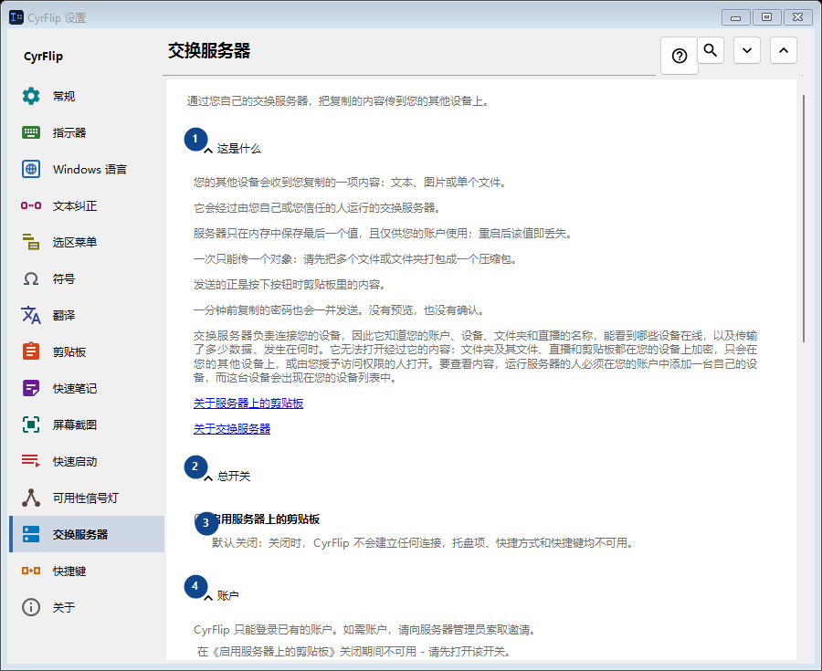
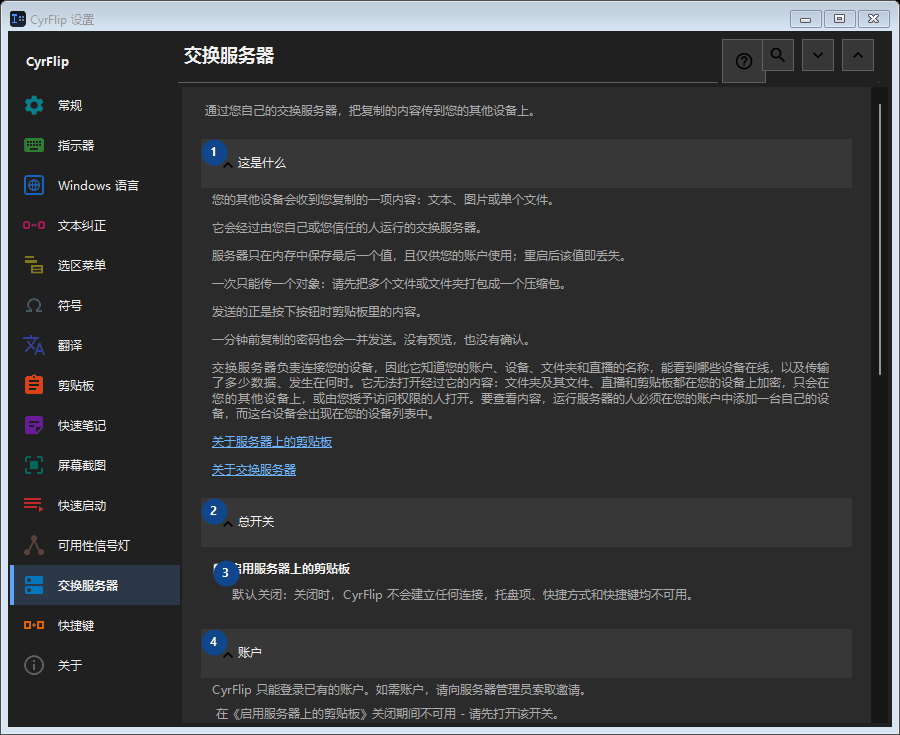

交换服务器
用途
通过您自己的交换服务器，把复制的内容传到您的其他设备上。


使用顺序
设置立即生效，无须按固定顺序操作；请使用以下分组。
界面元素
1. 这是什么
需要执行上述操作时使用此命令。接受前请阅读确认提示。
你的快捷键2. 总开关
需要执行上述操作时使用此命令。接受前请阅读确认提示。
你的快捷键3. 启用服务器上的剪贴板
默认关闭：关闭时，CyrFlip 不会建立任何连接，托盘项、快捷方式和快捷键均不可用。
你的快捷键4. 账户
需要执行上述操作时使用此命令。接受前请阅读确认提示。
你的快捷键5. 添加账户..
在《启用服务器上的剪贴板》关闭期间不可用 - 请先打开该开关。 此控件当前不可用。请先启用相应功能或选择条目。
你的快捷键6. 快捷键和快捷方式
需要执行上述操作时使用此命令。接受前请阅读确认提示。
你的快捷键7. 将剪贴板发送到服务器
在《启用服务器上的剪贴板》关闭期间不可用 - 请先打开该开关。 此控件当前不可用。请先启用相应功能或选择条目。
你的快捷键8. 更改 - 将剪贴板发送到服务器
在《启用服务器上的剪贴板》关闭期间不可用 - 请先打开该开关。 此控件当前不可用。请先启用相应功能或选择条目。
你的快捷键9. 从服务器获取剪贴板
在《启用服务器上的剪贴板》关闭期间不可用 - 请先打开该开关。 此控件当前不可用。请先启用相应功能或选择条目。
你的快捷键10. 更改 - 从服务器获取剪贴板
在《启用服务器上的剪贴板》关闭期间不可用 - 请先打开该开关。 此控件当前不可用。请先启用相应功能或选择条目。
你的快捷键11. 将“发送”放到桌面
在《启用服务器上的剪贴板》关闭期间不可用 - 请先打开该开关。 此控件当前不可用。请先启用相应功能或选择条目。
你的快捷键12. 将“获取”放到桌面
在《启用服务器上的剪贴板》关闭期间不可用 - 请先打开该开关。 此控件当前不可用。请先启用相应功能或选择条目。
你的快捷键13. 接收的文件
需要执行上述操作时使用此命令。接受前请阅读确认提示。
你的快捷键14. 存放从服务器接收的文件的文件夹
在《启用服务器上的剪贴板》关闭期间不可用 - 请先打开该开关。 此控件当前不可用。请先启用相应功能或选择条目。
你的快捷键15. 选择 - 存放从服务器接收的文件的文件夹
在《启用服务器上的剪贴板》关闭期间不可用 - 请先打开该开关。 此控件当前不可用。请先启用相应功能或选择条目。
你的快捷键16. 打开文件夹 - 存放从服务器接收的文件的文件夹
在《启用服务器上的剪贴板》关闭期间不可用 - 请先打开该开关。 此控件当前不可用。请先启用相应功能或选择条目。
你的快捷键